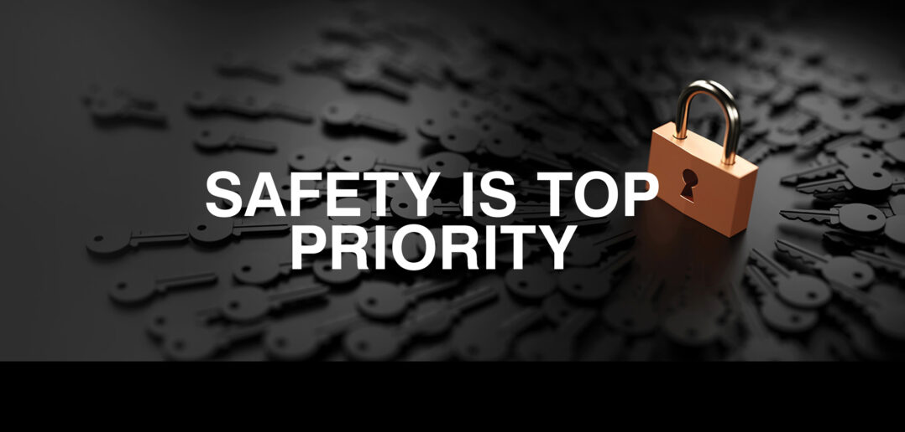

At RDP its Our Priority to SmackDown on Sexual Law Bendurs. And to make sure you are FULLY SAFE from sexual dangers.
"
At RDP, we are committed to safeguarding your digital world. Our dedicated teams work tirelessly to protect against online threats, ensure confidentiality, and uphold security at every level. Your safety isnt just a priority—its our mission. Heres The steps we take to Catch the Accomplis.
Cyber Surveillance & Tracking 🔍: We monitor suspicious online activity on social media, forums, and messaging platforms to detect predatory behavior.
Undercover Operations 🎭: Our Actor division conducts undercover investigations, posing as minors to engage with and expose predators.
Digital Forensic Analysis 🖥️: We collect and analyze chat logs, images, and metadata to gather concrete evidence against offenders
IP & Location Tracing 📍: Using advanced tracking tools, we pinpoint the real identities and locations of online predators.
Deployment of Special Teams 🚨:Instead of relying on law enforcement, RDP dispatches specialized teams to apprehend online predators and ensure they are neutralized.
Ensuring Secure Apprehension 🔒:Our trained personnel handle containment and extraction operations, ensuring predators are taken down safely and effectively.
Educating & Protecting the Community 🛡️:RDP raises awareness by educating minors, parents, and communities on recognizing and preventing online exploitation.
Continuous Improvement & Action 🔄:We stay updated on new threats and adapt our methods to remain effective in protecting minors online.